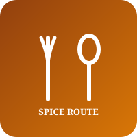

| ← Return to Dashboard Hub | Task 1 | Task 2 | Task 3: Restaurant | Task 4 | Task 5 | Task 6 | Task 7 | Task 8 |

"Crafting Authentic Culinary Journeys with Heritage Spices, Fresh Ingredients, and Pure Passion"
| Restaurant Navigation: Home | Menu | About Us | Contact Us |
Founded in 2012, Spice Route Gourmet Bistro & Grill brings together the finest culinary traditions from South Asia, the Mediterranean, and the Orient. Every single dish is prepared daily from farm-fresh local produce, ethically sourced meats, and artisan ground spice blends to deliver an unforgettable dining experience.
Explore our most celebrated kitchen offerings crafted by master chefs:
We adhere to strict culinary standards to guarantee unparalleled taste and hygiene:
| Food Item Name | Category | Price (PKR) | Availability |
|---|---|---|---|
| Royal Dum Chicken Biryani | Rice & Mains | PKR 650 | Available (In Stock) |
| Handi Mutton Karahi | Main Course | PKR 1,200 | Available (In Stock) |
| Smoked Seekh Kebab Platter | Barbeque / Grill | PKR 550 | Available (In Stock) |
| Dal Makhani Artisan Pot | Vegetarian Entrée | PKR 450 | Available (In Stock) |
| Charred Paneer Tikka | Vegetarian Grill | PKR 480 | Limited Daily Portions |
| Chilled Alfonso Mango Lassi | Beverages | PKR 200 | Available (In Stock) |
For party catering inquiries, private dining reservations, or feedback, email our manager:
Send Reservation Email (mailto:reservations@spiceroutebistro.pk)
Restaurant Physical Location & Postal Address:
Spice Route Gourmet Bistro & Grill
Plot 14-B, Executive Culinary Boulevard
Sector F-6 Markaz, Blue Area
Islamabad, Pakistan — Postcode: 44000
Telephone: +92 (51) 287-4321
© 2026 Spice Route Gourmet Bistro & Grill | Web Technologies Lab 01 (Task 3)